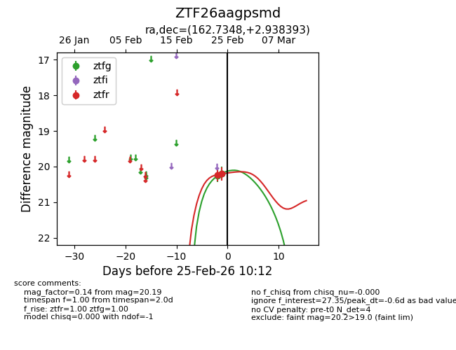
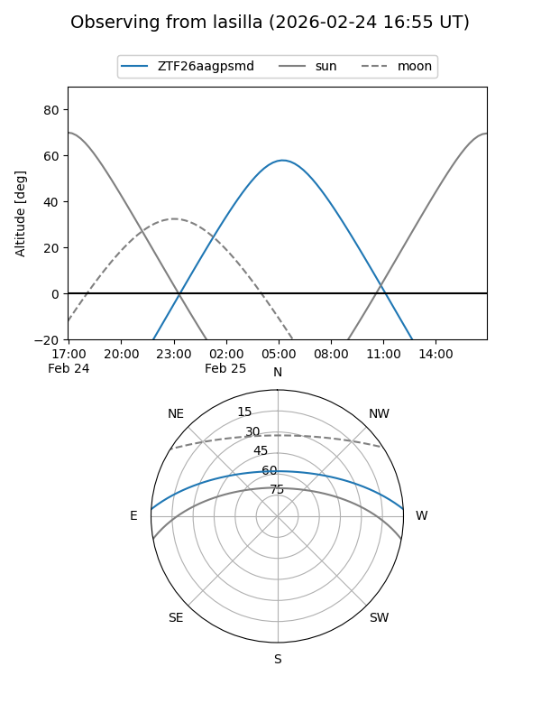
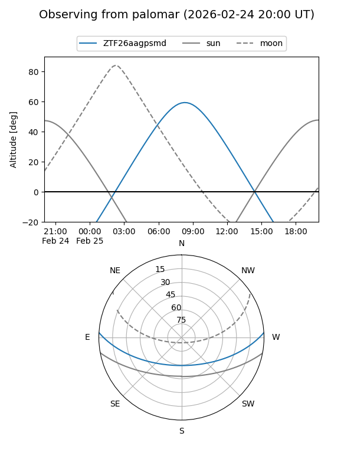
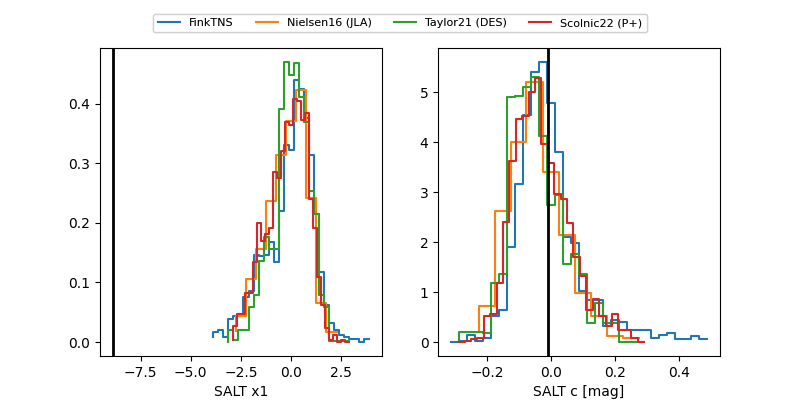

ZTF26aagpsmd
Target ZTF26aagpsmd at 2026-02-25 10:13
Aliases and brokers:
FINK: link
Lasair: link
ALeRCE: link
alt names
ZTF26aagpsmd (ztf,fink_ztf)
Coordinates:
equatorial (ra, dec) = 162.7348,+2.93839
equatorial (HMS+DMS) = 10:50:56.35,+02:56:18.22
galactic (l, b) = (247.7239,+52.38639)
Flags:
Photometry:
last ztfg=20.19, ztfr=20.20
2 ztfg, 2 ztfr detections
Lightcurve

Visibility


Additional plots
